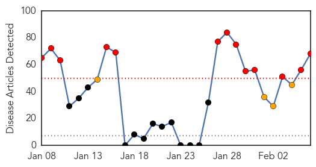
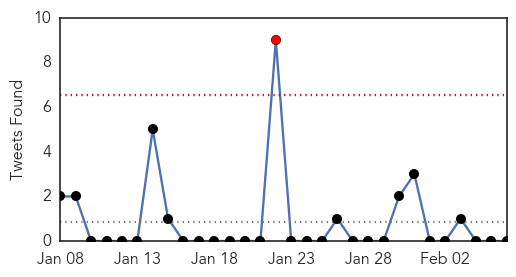

30 Day Trends
Web: 13 alerts, 4 warnings
Twitter: 1 alerts, 0 warnings
Top Articles:
- 0.986
- Ten more flu-related deaths reported in NC :: WRAL.com
- 0.974
- Ten Additional Flu Deaths In State Reported
- 0.974
- China Cuts Back On Reports Of New Strain Of Avian Flu !
- 0.972
- Oklahoma flu deaths on the rise, new cases decline
- 0.969
- Vietnam reports second bird flu death in 2014
- 0.968
- WHY is TB on the increase?
- 0.968
- Vietnam reports second bird flu death in 2014
- 0.955
- B.C. microbiologist calls for better superbug alert system
- 0.943
- Vietnam reports second bird flu death in 2014, Others news, Health News, AsiaOne YourHealth
- 0.917
- Chicago Tribune
- 0.917
- Chicago Tribune
- 0.917
- Chicago Tribune
- 0.917
- Chicago Tribune
- 0.917
- Chicago Tribune
- 0.917
- Chicago Tribune
- 0.917
- Chicago Tribune
- 0.917
- Chicago Tribune
- 0.917
- Chicago Tribune
- 0.917
- Chicago Tribune
- 0.917
- Chicago Tribune
- 0.917
- Chicago Tribune
- 0.917
- Chicago Tribune
- 0.917
- Chicago Tribune
- 0.917
- Chicago Tribune
- 0.917
- Chicago Tribune
- 0.917
- Chicago Tribune
- 0.917
- Chicago Tribune
- 0.910
- The world windows to Thailand
- 0.910
- The world windows to Thailand
- 0.889
- Chinese health officials report eleven H7N9 bird flu cases
- 0.887
- Vietnam reports second bird flu death in 2014
- 0.871
- 125 Tons of Medical Supplies
- 0.866
- Gunmen try to storm Libya army command in Tripoli
- 0.866
- Stolen 300-year-old Stradivarius violin recovered
- 0.866
- S. African rescuers recover 8 bodies after fire at Harmony mine -gov't
- 0.819
- Doctors use mobile phones to reduce malaria deaths - Health, Science and Environment
- 0.807
- PEDV May not Result in Increasing Pork Prices
- 0.782
- Afghan boy of 3 in Delhi to win fight with polio
- 0.771
- Sydney Norovirus Strain Responsible for Royal Caribbean Nightmare
- 0.770
- E-health scheme to stop baby swapping, theft in hospitals
- 0.763
- News, Sports, Jobs - Houghton, Michigan - The Daily Mining Gazette
- 0.760
- Alberta pork producers on high alert after PEDv reaches Ontario
- 0.706
- Launch of Zimbabwe HIV Training and Service Delivery Programs - Zimbabwe
- 0.701
- Fight virus with vigilance, hog farmers told
- 0.694
- Feds reaffirm West Virginia water safe for all
- 0.664
- Tainted W.Va. water OK for everyone to use
- 0.620
- Funds sought to tackle displacement crisis in S. Sudan
- 0.602
- CDC: Tainted W.Va. water OK for everyone to use
- 0.600
- Tuberculosis Crisis Bridges North Korea and U.S. Hostility
- 0.594
- Rice News Release: Quick test finds signs of diarrheal disease
Showing top 50 articles...
Top Tweets:
- 0.709
- FluFacts: The flu is a respiratory disease, NOT a stomach or intestinal disease. http://t.co/aQM86l4CD4
Web/News Articles
Tweets
Article Locations